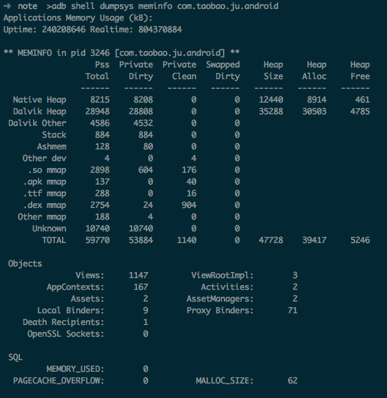

Android内存分析和调优
2014-02-13 20:03:00 by suphyAndroid内存分析和调优
内存相关名词解释：VSS/RSS/PSS/USS
- VSS Virtual Set Size 虚拟耗用内存（包含共享库占用的内存）
- RSS Resident Set Size 实际使用物理内存（包含共享库占用的内存）
- PSS Proportional Set Size 实际使用的物理内存（比例分配共享库占用的内存）
- USS Unique Set Size 进程独自占用的物理内存（不包含共享库占用的内存）
一般来说内存占用大小有如下规律：VSS >= RSS >= PSS >= USS
要优化内存，首先要做的就是分析内存占用情况。android提供了多个工具和命令进行内存分析
第一层 procrank命令
adb shell procrank
可以使用以下命令连续查看某一进程内存使用情况：
while true; do procrank | grep com.taobao.ju.android; sleep 5; done
它从/proc/pid/maps中读取信息来进行统计。源码位于：/system/extras/procrank; 该命令可以列出当前系统所有进程的内存占用情况，如：
PID Vss Rss Pss Uss cmdline
24255 1058576K 126108K 84945K 79296K com.zhihu.daily.android
23373 1088216K 102852K 63406K 59344K com.alibaba.android.babylon
23777 966024K 92384K 61982K 58244K com.tencent.mm
14729 995188K 99964K 61432K 55392K com.netease.newsreader.activity
3246 1054912K 96992K 59458K 54600K com.taobao.ju.android
605 1043552K 85772K 57351K 53724K system_server
693 961644K 72712K 46478K 43600K com.android.systemui
14415 975220K 72012K 39411K 36548K air.pioupiou
9052 983784K 72528K 35451K 31268K com.sina.weibo
27142 946320K 56992K 31705K 30204K com.android.dialer
...
...
169 1068K 484K 153K 148K /system/bin/qcks
165 1424K 144K 140K 140K /sbin/healthd
625 1048K 440K 129K 124K /system/bin/efsks
212 924K 328K 118K 116K /system/bin/sh
166 1000K 340K 114K 112K /system/bin/servicemanager
211 2116K 468K 107K 52K /system/bin/qseecomd
6943 868K 332K 107K 104K wdaemon
31257 888K 316K 94K 92K /data/data/com.estrongs.android.pop/files/libestool2.so
18647 856K 300K 90K 88K /data/data/com.UCMobile/UCMobile/amodel/a
------ ------ ------
981273K 886808K TOTAL
RAM: 1878788K total, 77468K free, 138504K buffers, 596304K cached, 8420K shmem, 63432K slab
查看具体某一进程使用cat proc/pid/status 如：cat /proc/3246/status
- VmPeak: 表示进程所占用最大虚拟内存大小
- VmSize: 表示进程当前虚拟内存大小
- VmLck: 表示被锁定的内存大小
- VmHWM: 表示进程所占用物理内存的峰值
- VmRSS: 表示进程当前占用物理内存的大小(与procrank中的RSS)
- VmData: 表示进程数据段的大小
- VmStk: 表示进程堆栈段的大小
- VmExe: 表示进程代码的大小
- VmLib: 表示进程所使用共享库的大小
- VmPTE: 表示进程页表项的大小

通过procrank，只能很宏观的横向比较不同的应用。如果要更细致的了解具体内存是如何使用，则需要进入.
第二层 dumpsys meminfo
adb shell dumpsys meminfo package.name
执行结果：

第三层 adb shell showmap pid
该命令也是读取smaps文件，但结果细化的具体的vm area.
该命令输出的每行表示一个vm area，列出了该vm area的start addr, end addr, Vss, Rss, Pss, shared clean, shared dirty, private clean, private dirty，object。
第二层的dumpsys meminfo其实就是读取这些数据，然后分类（native, dalvik, .so map, etc.)统计生成。
- start addr和end addr表示进程空间的起止虚拟地址。
- Vss，Rss，Pss跟前面说的一样。
- Object可以看做mmap的文件名。
- Shared clean，按字面意思，表示共享的干净的数据。共享表示多个进程的虚拟地址可以都指向这块物理空间，表示多个进程共享的so库
- Private clean，包括该进程私有的干净的内存。包括前面说的该进程独自使用的so和进程的二进制代码段。
- Private dirty，表示该进程私有的不跟disk数据一致的内存段。
与Dalvik GC相关的属性
Logcat输出的log中，当垃圾回收器工作时，可以在Logcat中看到他的信息，类似于：
D/dalvikm( 14302): GC_CONCURRENT freed 2349K, 65% free 3246K/9551K, external 4703K/5261K, paused 2ms+2ms
其中D/dalvikvm表示由dalvikvm输出的调试信息，括号后的数字代表dalvikvm所在进程的pid. 在dalvik中，GC的类型有三种：
- GC_EXPLICIT
应用主动调用System.gc()产生的GC事件 - GC_FOR_ALLOC
内存分配时，发现可用内存不够时触发的GC事件 - GC_CONCURRENT
当堆变得很大，防止出现堆溢出异常时产生 - GC_FOR_MALLOC
如果GC_CONCURENT类型的操作没有及时运行，并且应用程序还需要分配更多内存时产生。 - GC_EXTERNAL_ALLOC
外部内存分配失败时触发
freed 2349K 表示本次垃圾收集释放了2349K的内存。
65% free 3246K/9551K 其中9551K表示当前内存总量，3246K表示可用内存，65%表示可用内存占总内存的比例
external 4703K/5261K 表示可用外部内存/外部内存总量
paused 2ms+2ms 第一个时间值表示markrootset的时间，第二个时间值表示第二次mark的时间。如果触发原因不是GC_CONCURRENT，这一行为单个时间值，表示垃圾收集的耗时时间